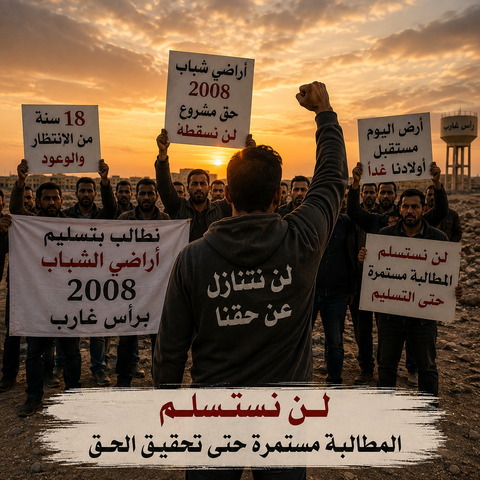
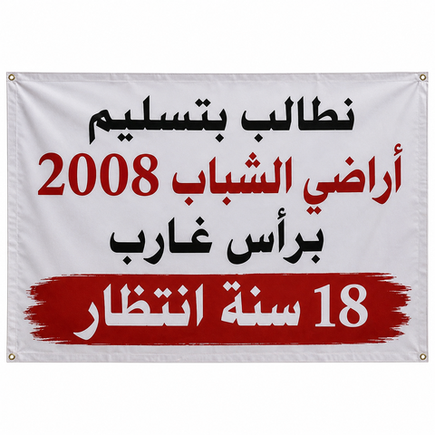
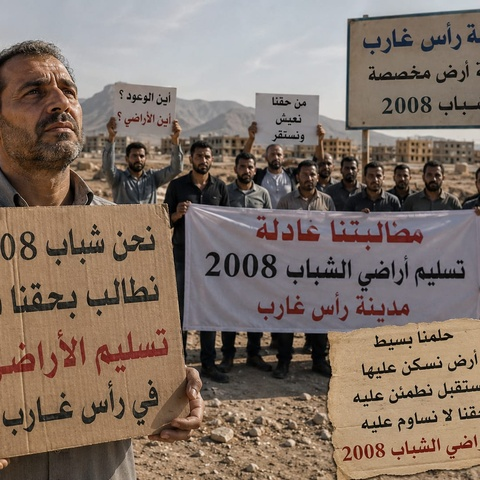
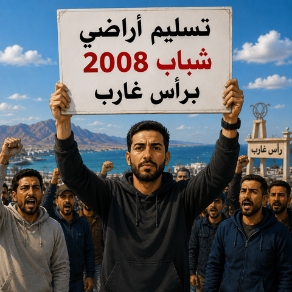
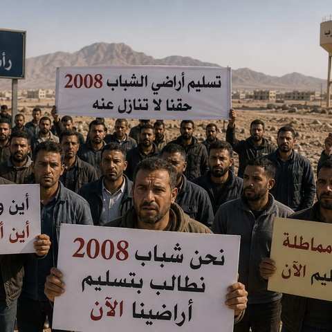
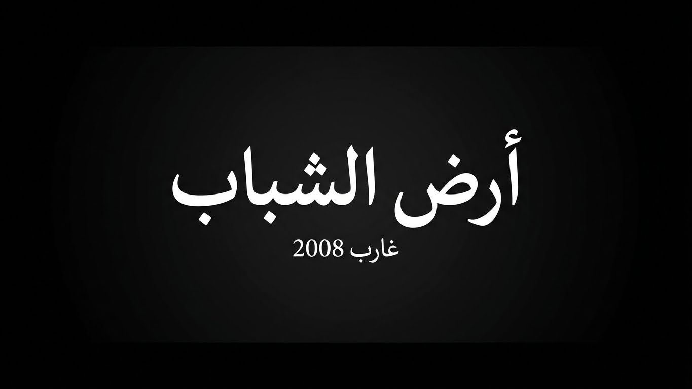
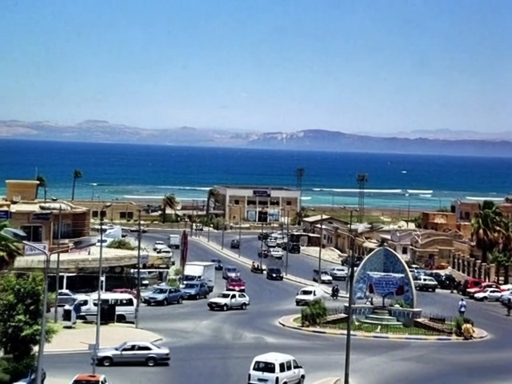
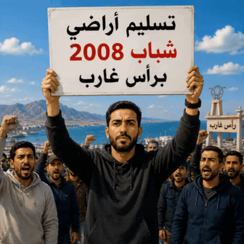

بداية التقديم
فتح باب التقديم على أراضي الشباب، وتقدم المواطنون بطلباتهم وسددوا الرسوم.
18 سنة من الانتظار والمطالبة باستكمال إجراءات وتسليم أراضي الشباب للمستحقين.

لن نتنازل عن حقنا
بدأت الحكاية مع فتح باب التقديم على أراضي الشباب في رأس غارب عام 2008. تقدم آلاف المواطنين بطلباتهم وسددوا رسوم التقديم وحصلوا على إيصالات.
مر الملف بمراحل للحصر والتحديث، واستمرت المتابعة والمطالبة. هذا الموقع يجمع القصة والصور والتحديثات في مكان واحد، مع الاعتماد على المستندات والمعلومات الموثقة.
«لن نتنازل عن حقنا»
فتح باب التقديم على أراضي الشباب، وتقدم المواطنون بطلباتهم وسددوا الرسوم.
بحسب المعلومات المتداولة في الملف، بلغ عدد المتقدمين 3537 ثم ظهرت مراحل للحصر والتصفية وصولًا إلى 1394.
وفق ما هو موثق لدى أصحاب الملف، تم اعتماد تقسيم يضم 1123 قطعة، مساحة القطعة 150 م².
طُرحت مسألة تحديث بيانات المتقدمين للوصول إلى العدد المستهدف في التقسيم.
استمرار المتابعة والمطالبة بإنهاء الإجراءات وتسليم الأراضي للمستحقين وفق القرارات الرسمية.






تُضاف هنا البيانات الجديدة بعد التحقق من مصدرها وتاريخها.
يمكن إضافة صور القرارات والمكاتبات والإيصالات الرسمية.
يفضل عدم نشر أي أرقام أو أسماء أو قرارات غير مؤكدة.
المطالبة مستمرة حتى تحقيق الحق